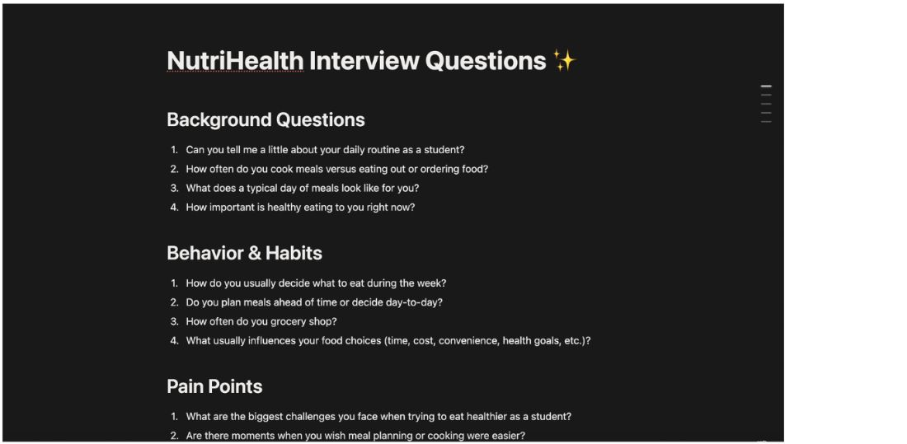
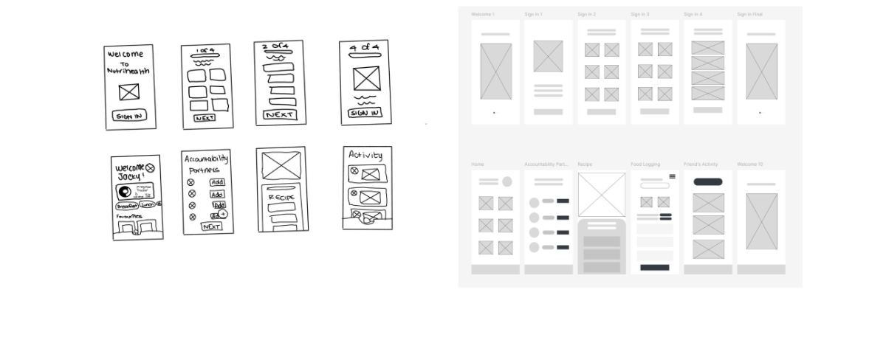
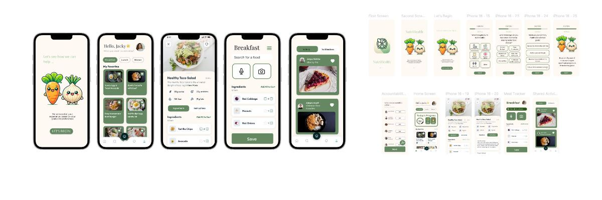
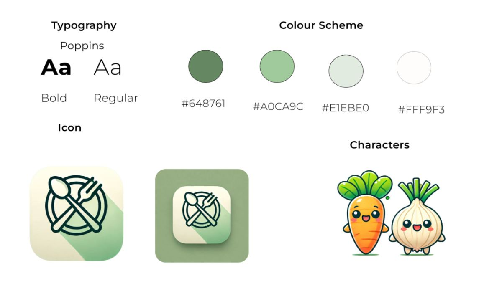

Contents
Case study · 2023
NutriHealth
A nutrition app for college students, built from the problem I was living
{{ m.k }}
{{ m.v }}
Maintaining a healthy diet as a college student often feels overwhelming with a busy schedule. Many of my friends and I relied on fast food, skipped meals, or felt unmotivated to make healthier choices. I surveyed 50 students, interviewed 16 of my peers, and designed NutriHealth around the three things that actually stopped them.
My impact
From naming why students give up to designing the thing that keeps them going.
{{ i.t }}
{{ i.b }}
{{ s.n }}
{{ s.l }}
Design process
Research, design, iteration.
Hover a stage to see what it involved
{{ p.n }}
{{ p.title }}
{{ it }}
The problem
College students struggle to maintain healthy eating habits
A survey of 50 students and interviews with 16 peers surfaced the same four obstacles, none of them about knowing what healthy eating is.
{{ b.t }}
{{ b.n }}
{{ b.b }}
And three challenges the design had to hold at once
•
{{ f }}
Research phase
Competitive analysis
Existing apps fell short on affordability, time, and connection
Three of the apps students already had on their phones, each strong at one part of the problem and silent on another.
{{ c.name }}
- •{{ n }}
User research
I interviewed 16 of my peers
Fifty survey responses set the shape of the problem; sixteen interviews explained it. I mapped what students said, thought, did and felt to find where the habit actually broke.


What the survey said
{{ s.n }}
{{ s.v }}
Affinity map
Clustered from the survey responses, the interviews and the app review: what actually stopped a student from eating well.
{{ col.theme }}
{{ n }}
{{ col.tag }}
Major insights
Three themes, and the design challenge each one set.
{{ t.k }}
{{ t.n }}
{{ t.o }}
{{ t.c }}
Design phase
How might we
How can we simplify meal planning, encourage better eating habits, and create a community around food amongst busy college students?
Ideation
From paper sketches to a full screen library
Onboarding, home, recipe and food logging, drawn in grey first so the decisions stayed about hierarchy and effort rather than colour.


Iteration
Trade-off: browsing-first home screen vs action-first home screen
Adding Today's Progress created a clearer path from intention to action.
{{ it.title }}
{{ m.t }}
{{ p }}
Design system
Poppins, a soft green palette, and two vegetable companions
A warm, low-contrast palette so tracking reads as encouragement rather than a deficit, with a carrot and an onion carrying the personality so the interface itself can stay quiet.

{{ p.hex }}
Final design
Three features that turn intention into routine
Each feature answers one of the three themes directly: a planner for accessibility, accountability partners for habit formation, and daily logging for awareness.
{{ r.n }}
{{ r.t }}
{{ p }}
Final design · live
The prototype, running in the page
{{ t.title }}
{{ t.body }}
The demo runs itself. Hover the phone to stop it and try the screen yourself.
Reflection
Habits are designed, not willed.
NutriHealth started as my own problem and ended as a system for it. The most useful thing I learned was that the barrier was rarely knowledge; it was effort, timing and the absence of anyone noticing.
{{ r.t }}